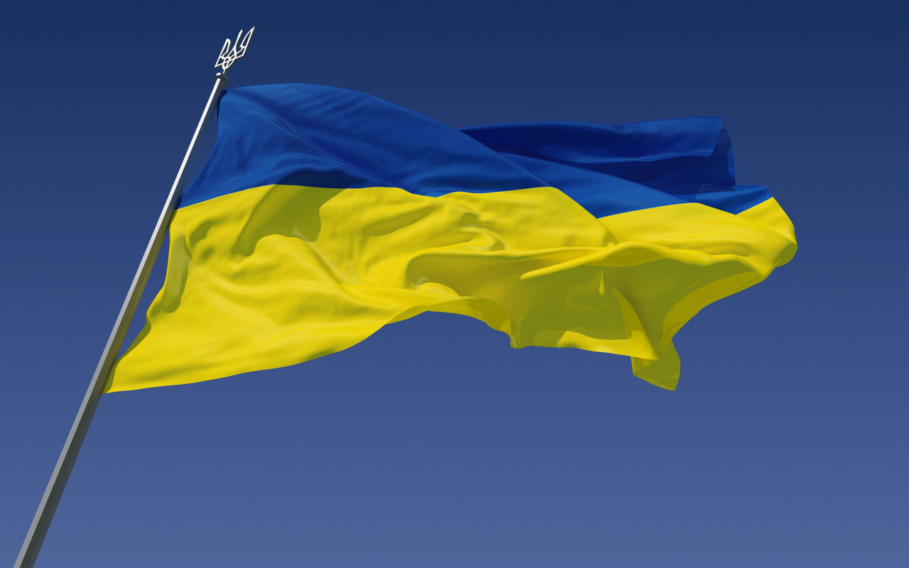
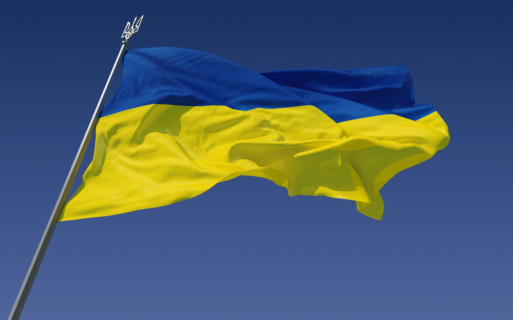
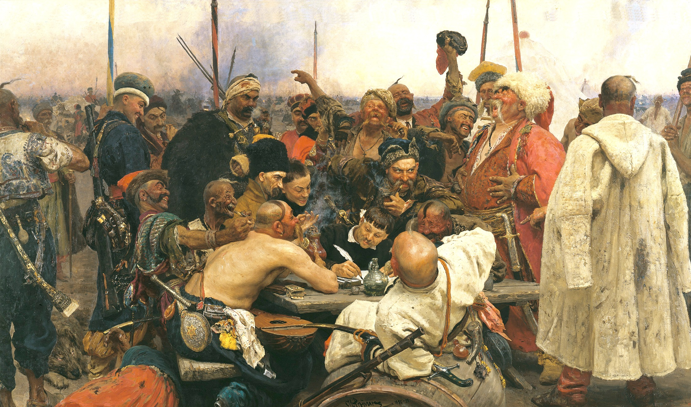
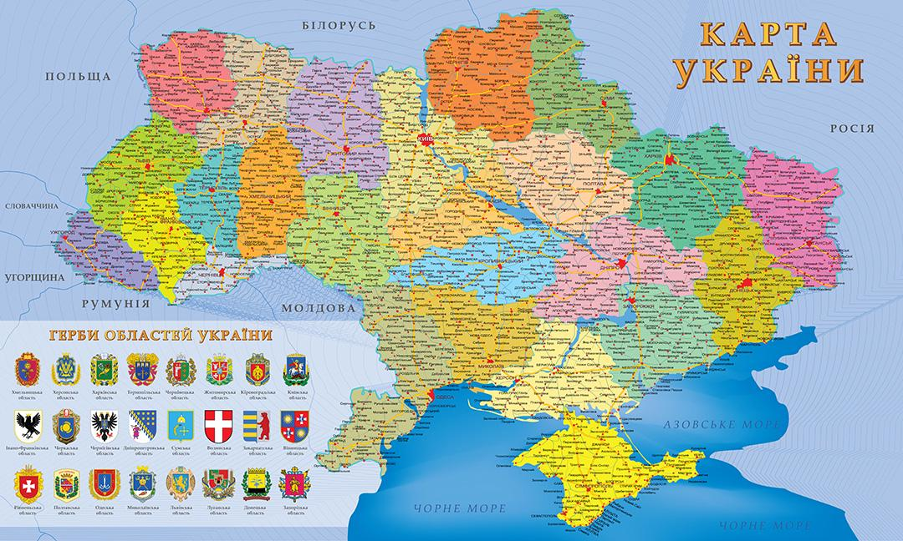
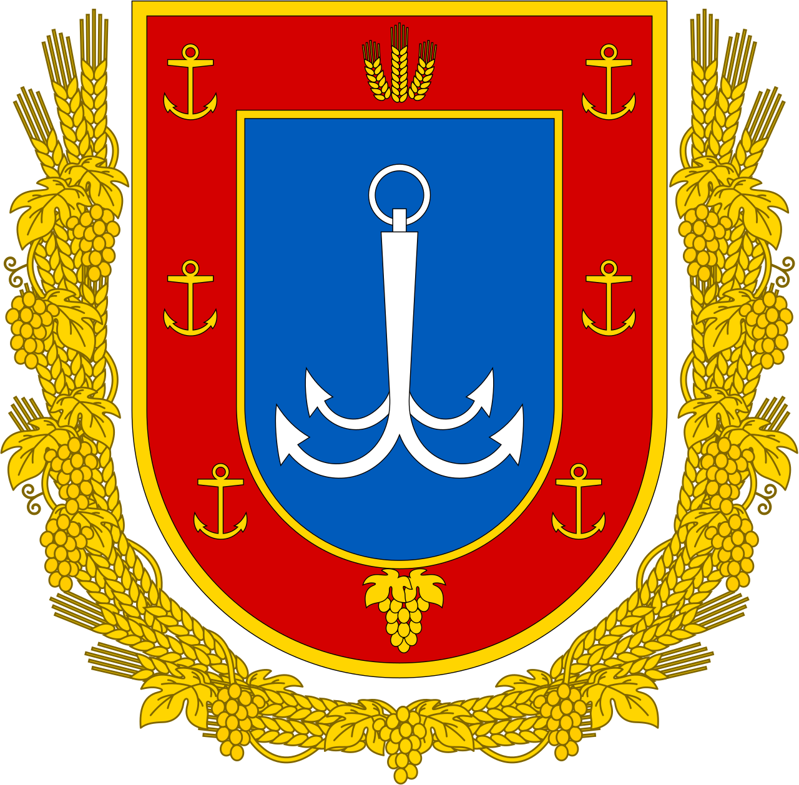
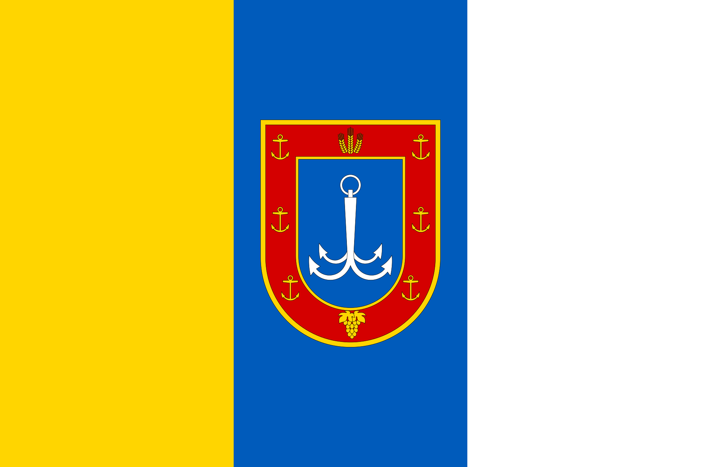
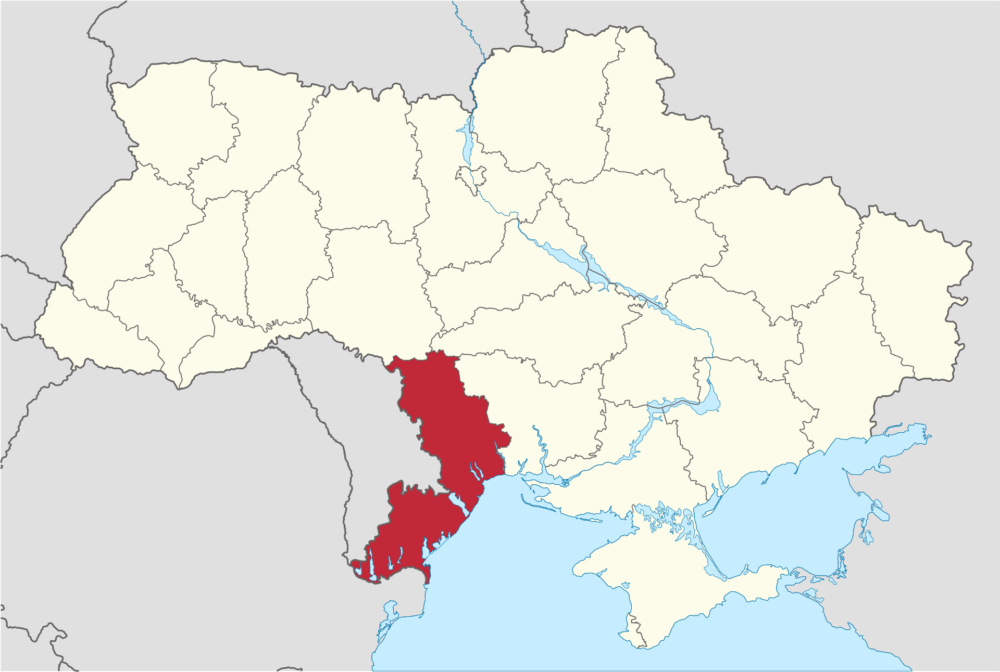

Украї́на (МФА: [ʊkrɐˈjɪn̪ɐ]) — держава, розташована у Східній та частково у Центральній Європі, охоплює південний захід Східноєвропейської рівнини, частину Східних Карпат і Кримські гори. Межує з Румунією і Молдовою на південному заході, з Угорщиною, Словаччиною та Польщею на заході, з Білоруссю на півночі та з Росією на сході й північному сході. На півдні омивається Чорним та Азовським морями. Площа становить 603 700 км². Найбільша за площею країна серед повністю розташованих у Європі.
Відновлення української державності відбулося під час великого козацького повстання, відомого як Хмельниччина , з 1648 року, наслідком якого стало утворення автономної козацької держави, Гетьманщини, або Війська Запорозького. Обмежену автономність Гетьманщина зберігала до 1764 року, при тому частина земель відійшла до Речі Посполитої, а інша частина знаходилася під протекторатом Московії, які поступово поглинули козацьку державу. Згодом українські землі були розділені між Російською імперією та Австро-Угорською монархією.
Під час української революції початку XX століття на українських землях постало декілька національних держав, перш за все Українська Народна Республіка (УНР, 1917—1921), а також Українська Держава (1918), Західноукраїнська Народна Республіка (1918—1919) та Кубанська Народна Республіка (1918—1920). УНР наближалася до об'єднання у своєму складі усіх зазначених держав, але внаслідок низки воєн була загарбана сусідами: Радянською Росією, Польською Республікою, Румунським королівством і Чехословацькою Республікою.
З 1919 року, спочатку на східних українських землях зі столицею у Харкові, почала створюватися більшовицька Українська Соціалістична Радянська Республіка (УСРР, згодом УРСР), яка у 1922 році ввійшла до складу Радянського Союзу. Київ став столицею УРСР у 1934 році. Під час Другої світової війни до УРСР були приєднані частина Західної України й Буджак, згодом Закарпаття, а з 1954 року — Крим.

Сучасна держава Україна відновила незалежність внаслідок розпаду Радянського Союзу й проголошення незалежності 24 серпня 1991 року, яке закріпив референдум 1 грудня 1991 року. Україна — унітарна держава, складається з 24 областей, Автономної Республіки Крим і двох міст зі спеціальним статусом: Києва — столиці й найбільшого міста, і Севастополя.
Україна є парламентсько-президентською республікою. Органом законодавчої влади є Верховна Рада України, яка призначає вищий орган виконавчої влади — Кабінет Міністрів України, що очолюється Прем'єр-міністром. Главою держави та Верховним Головнокомандувачем є Президент України.
Оде́ська о́бласть (Одещина) — область на півдні України. Найбільша за територією область України. Одна з найрозвиненіших областей країни в економічному, туристичному, культурному та науковому напрямках. На півночі та сході межує (за годинниковою стрілкою) з Вінницькою, Кіровоградською та Миколаївською областями України, омивається водами Чорного моря, на півдні — з Румунією, на заході — із Молдовою. До складу області входить також о. Зміїний. Одеську область було утворено 27 лютого 1932 року, коли ЦВК СРСР затвердив постанову IV позачергової сесії ВУЦВК від 9 лютого 1932 року про створення на території Української СРР п'яти областей. У 1954 році до її складу увійшла територія колишньої Ізмаїльської області (територія від Дністровського лиману до р. Дунай).
  Географічне розташування
Область займає територію Північно-Західного Причорномор'я від гирла ріки Дунай до Тилігульського лиману, а від моря на північ — на 250 км.
На півночі Одеська область межує з Вінницькою та Кіровоградською, на сході — з Миколаївською областями, на заході — з Молдовою, а на південному заході — з Румунією. Всього в межах області пролягає 1362 км державного кордону України. Площа Одеської області становить 5,5 % території України.
Геополітичне розташування Одещини обумовлене як вигідним транспортно-географічним розміщенням, так і зростаючою активізацією її участі у великих європейських міжрегіональних організаціях — Асамблеї європейських регіонів і Робітничої співдружності придунайських країн. Будучи частиною морського фасаду країни, Одеська обл. значною мірою сприяє активній участі України в роботі країн-членів Чорноморського економічного співробітництва.